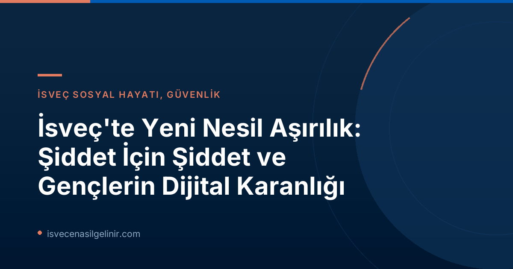

Şiddet Uğruna Şiddet: Yeni Nesil Aşırılığın Kökenleri
Helsingborg'da yaşanan son trajik olay, İsveç'te "şiddet uğruna şiddet" mottosu üzerine kurulu tehlikeli bir trendi gözler önüne serdi. 12 yaşındaki bir çocuğun 5 yaşındaki bir kızı bıçaklamasıyla ortaya çıkan bu durum, failin şiddeti yücelten bir TikTok hesabıyla bağlantılı olmasıyla daha da endişe verici bir boyut kazandı. Bu hesap, Columbine katliamını gerçekleştirenler gibi toplu katliamcıları ve Trollhättan'da üç kişiyi öldüren Anton Lundin Pettersson gibi şiddet uygulayanları "kutlayan" içerikler paylaşıyordu.
Bu tür içerikler, özellikle True Crime Community (TCC) adı verilen bir alt kültürde yaygın. TCC, genç bireylerin toplu katliamcılara ve okul saldırganlarına karşı takıntılı bir hayranlık beslediği, internet tabanlı bir topluluktur. Bu, İsveç yetkililerinin "Våldsbejakande misantropi" (Şiddeti Onaylayan İnsan Düşmanlığı) olarak adlandırdığı daha geniş bir fenomenin parçası olarak değerlendirilmektedir.
Våldsbejakande Misantropi (Şiddeti Onaylayan İnsan Düşmanlığı) Nedir?
Våldsbejakande Misantropi Tanımı
Våldsbejakande Misantropi (Şiddeti Onaylayan İnsan Düşmanlığı), İsveçli yetkililerin 2024 sonbaharı ve 2025 kışında Hässelby ve Borås'ta yaşanan bıçaklama vakaları sonrası kullanmaya başladığı bir aşırılık türüdür. Bu fenomen, belirgin bir ideoloji tarafından değil, şiddetin kendisinin itici bir güç olarak görülmesiyle karakterize edilir. Yani, şiddet bir amaca ulaşmak için bir araç değil, başlı başına bir amaçtır.
Bu kavram, 2024 sonbaharı ve 2025 kışında Hässelby ve Borås'ta iki 14 yaşındaki çocuğun gerçekleştirdiği bıçaklama vakaları sonrasında öne çıktı. Bu çocuklar, 764 ve No Lives Matter gibi grupları içeren "Com-nätverket" (Com-ağı) adlı başka bir şiddeti onaylayan alt kültürün aktif üyeleriydi.
Ancak kavramın kendisi tartışmalıdır. Eleştirenler, terimin çok geniş olduğunu veya bu çevrelerde var olan sağ aşırı uç etkileri küçümsediğini belirtiyor. Com-ağının sohbetlerinde görülen ırkçılık da küçümsenemez bir gerçektir. Örneğin, 2025'teki Borås ön soruşturması, failin başlangıçta bir "Müslümanı" bıçaklamayı planladığını, ancak eylemi gerçekleştirirken kurbanın rastgele seçildiğini ortaya koydu. Önemli olanın saldırının gerçekleşmesi olduğu vurgulanıyor.
Dijital Ortamın Yalnız Çocukları: Neden Bu Akımlara Katılıyorlar?
TCC ve 764 gibi oluşumların birçok ortak noktası bulunmaktadır. Bu çevrelere dahil olanlar genellikle internet dışında sosyal bir çevreye sahip olmayan çocuk ve gençlerden oluşur. Birçoğu, yaşadıkları haksızlık veya mağduriyet duygularını çevrelerine yönlendirme eğilimindedir ve bu durum bazen psikolojik rahatsızlıklarla birleşebilir.
Bu gruplara katılımda "statü" arayışı merkezi bir rol oynar. Eski bir 764 üyesi SVT'ye yaptığı açıklamada, "Gençlerin bir intikam ve aidiyet hissi bulabileceği başka bir çete de olabilirdi" diyerek bu motivasyonu özetlemiştir. Bazıları için motivasyon, kendilerini rol model olarak gördükleri toplu katliamcıların saflarına katılarak, sözden eyleme geçen ve başkaları tarafından "saygı duyulan" biri olmaktır.
İsveç'e göç eden veya burada yaşayan gençlerin sağlıklı bir sosyal çevreye entegrasyonu büyük önem taşımaktadır. Bu süreçte dil öğrenimi ve kültürel adaptasyon kadar, gençlerin zararlı online akımlardan korunması da kritik bir meseledir. İsveç vatandaşlığına giden yolda İsveç Vatandaşlık Sınavı gibi adımlar, toplumla bütünleşmeye yönelik önemli birer araç olabilir.
Aileler ve Toplum Nasıl Önlem Almalı?
Bu tehlikeli akımlarla mücadelede ailelere ve topluma önemli görevler düşmektedir. Ebeveynlerin çocuklarının dijital aktivitelerini bilinçli bir şekilde takip etmesi, onlarla açık iletişim kurması ve olası tehlikeler hakkında bilgilendirmesi elzemdir.
Okullar, sosyal hizmetler ve ilgili sivil toplum kuruluşları, risk altındaki çocukları ve gençleri belirleyerek destek sağlamalı, onlara alternatif sosyal ortamlar sunmalıdır. Erken müdahale, bu tür şiddet yanlısı alt kültürlerin yayılmasını önlemek adına hayati öneme sahiptir.
Medyanın da bu tür konuları ele alırken dikkatli ve sorumlu bir yaklaşım sergilemesi, sansasyon yaratmaktan ziyade bilgilendirici ve önleyici bir rol üstlenmesi gerekmektedir.
Referanslar:
- SVT Nyheter Inrikes
- sverigemedborgarskapsprov.com
- Helsingborgs Dagblad
- Expo
Çocuğunuzu Dijital Tehditlerden Koruyun!
İsveç'teki gençleri etkileyen aşırı akımlar hakkında daha fazla bilgi edinin ve sağlıklı bir dijital çevre oluşturmak için adımlar atın.